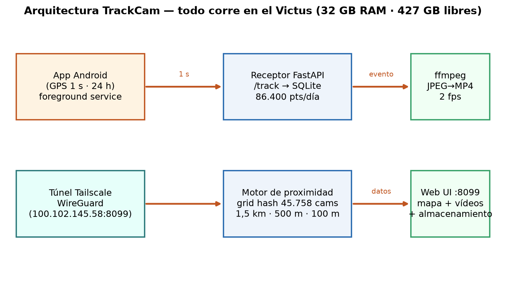
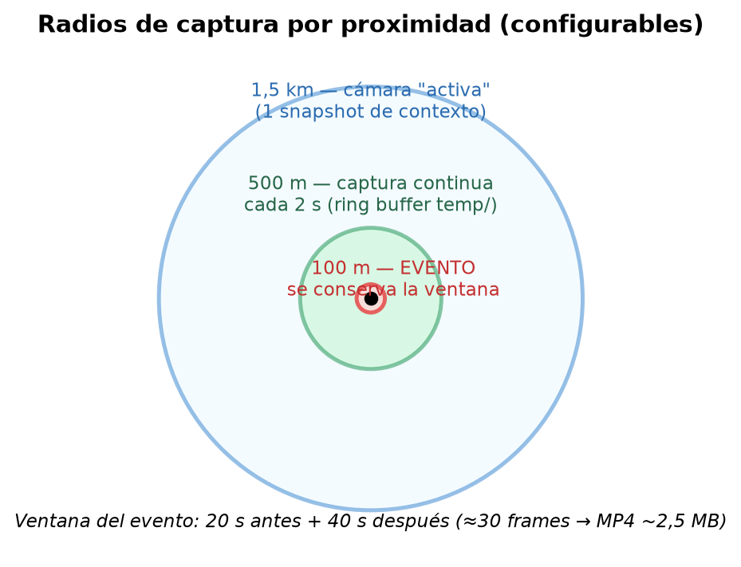
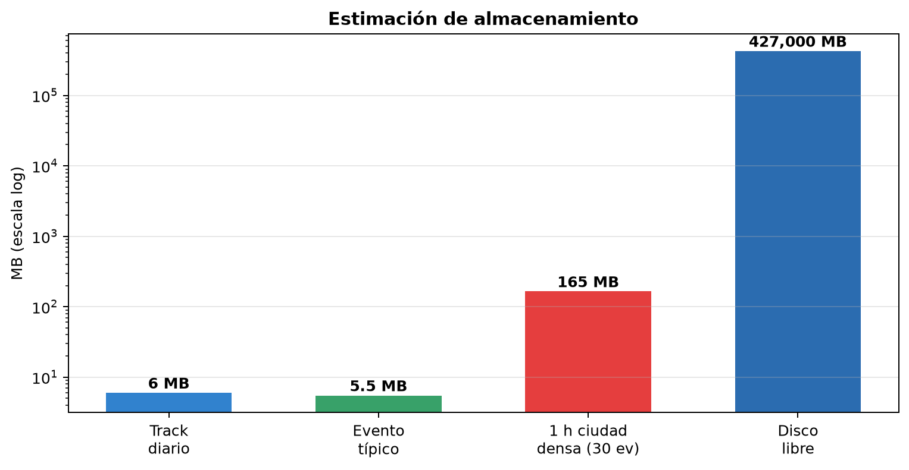

TrackCam registra la ubicación del usuario cada segundo desde el móvil (enviada por túnel seguro), cruza esa posición con el catálogo de 45.758 cámaras georreferenciadas de EuroCams y captura imágenes según la proximidad. Cuando el usuario pasa a menos de 100 m de una cámara se genera un evento: un vídeo (montado con ffmpeg) más las imágenes originales, con un marcador clicable en el track. Todo se almacena en el ordenador, se consulta y descarga desde el navegador, con control del almacenamiento (temporales vs. guardado).
Viabilidad: ALTA. Todos los componentes ya existen o están instalados (ffmpeg ✓, Tailscale ✓, FastAPI ✓, Leaflet ✓, catálogo de cámaras ✓, 427 GB libres ✓). El único riesgo real es el comportamiento de las ROMs Android agresivas con la app en segundo plano, mitigable con foreground service + exención de batería.
| # | Petición | Solución |
|---|---|---|
| 1 | Ubicación cada segundo | App Android foreground → POST Tailscale → FastAPI :8099 |
| 2 | Cámaras en radio 1,5 km "activas" | Grid hash sobre 45.758 cams → 1 snapshot de contexto |
| 3 | A <500 m captura cada 2 s | Hilos de captura con ring buffer temporal (temp/) |
| 4 | Guardar solo si paso a <100 m | Regla de compromiso: se conserva al entrar en 100 m |
| 5 | Conservar 20 s antes + 40 s después | Ring buffer 60 s por cámara; recorte de ventana al salir |
| 6 | Cada cámara = un evento | ffmpeg JPEG→MP4 + carpeta de imágenes + marcador en el track |
| 7 | Cámaras fijas (1 foto/5 min) | 2 capturas bastan (regla especial) |
| 8 | Almacenar en el ordenador + track | SQLite + GeoJSON → Leaflet; eventos en disco |
| 9 | Ver/descargar desde navegador + control | Web UI: mapa, eventos, panel de almacenamiento (cuotas, borrado) |
| 10 | App 24 h, auto-relanzamiento, intervalo configurable | APK Kotlin: foreground + START_STICKY + exención batería (fallback: GPSLogger FOSS) |
| 11 | Envío por túnel | Tailscale (instalado). Fallback: túnel Cloudflare con token |
| 12 | "Video track": reproducir la ruta con vídeos | Modo reproducción: animación del punto; al llegar a un evento se reproduce su vídeo |

El flujo completo es: móvil → túnel → receptor → proximidad → captura → evento → web. Las cámaras con protección hotlink se sirven a través del proxy de EuroCams (Referer por fuente).


| Componente | Tamaño | Política |
|---|---|---|
| Track (1 pts/s) | ~6 MB/día | Poda a 200 MB (≈1 mes) |
| Evento típico | ~5,5 MB (30 fotos + MP4) | Cuota 20 GB por defecto |
| Temporales (ring buffers) | acotado | Tope 500 MB, poda automática |
| 1 h ciudad densa (peor caso) | ~165 MB | — |
Disco libre: 427 GB → margen de miles de horas de conducción urbana. Cuotas configurables.
| Fase | Contenido | Esfuerzo |
|---|---|---|
| F0 | Consenso del plan, repo, Nextcloud, tareas CalDAV | hoy |
| F1 · MVP | Receptor /track + SQLite + grid hash + motor de captura con ring buffers + eventos ffmpeg + mapa web. Cliente: GPSLogger sobre Tailscale | ~1 día |
| F2 | Panel de almacenamiento (temp/guardado, cuotas, descarga, borrado), ajustes (intervalos/radios/retención), reproductor de vídeo | ~1 día |
| F3 | APK Kotlin (24 h, auto-restart, intervalo configurable) + modo video track (reproducir ruta con vídeos) | ~2-3 días |
| F4 | Pulido: exportaciones, multi-día, notificaciones | según demanda |
| Riesgo | Impacto | Mitigación |
|---|---|---|
| ROMs Android matan la app (Xiaomi/Huawei…) | Alto | Foreground service + guía exención batería + START_STICKY. Riesgo nº 1, atacado en F3 |
| Carga a servidores de cámaras | Medio | Tope de hilos, 2 s solo live, fijas a 2 capturas, ring buffers acotados |
| URLs de cámaras muertas | Medio | Chequeo de salud existente; eventos usan las que responden |
| GPS en túneles/interiores | Bajo | Filtro de puntos (velocidad/accuracy), fusión con red |
| Móvil fuera del tailnet | Bajo | Sin datos (aceptado); alternativa túnel CF |
| Crecimiento de disco | Bajo | Cuotas + poda + panel de control |